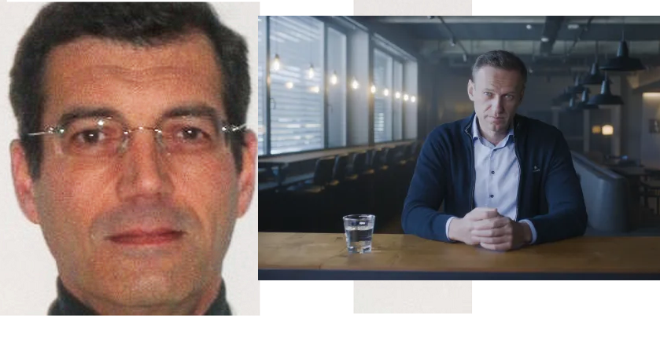
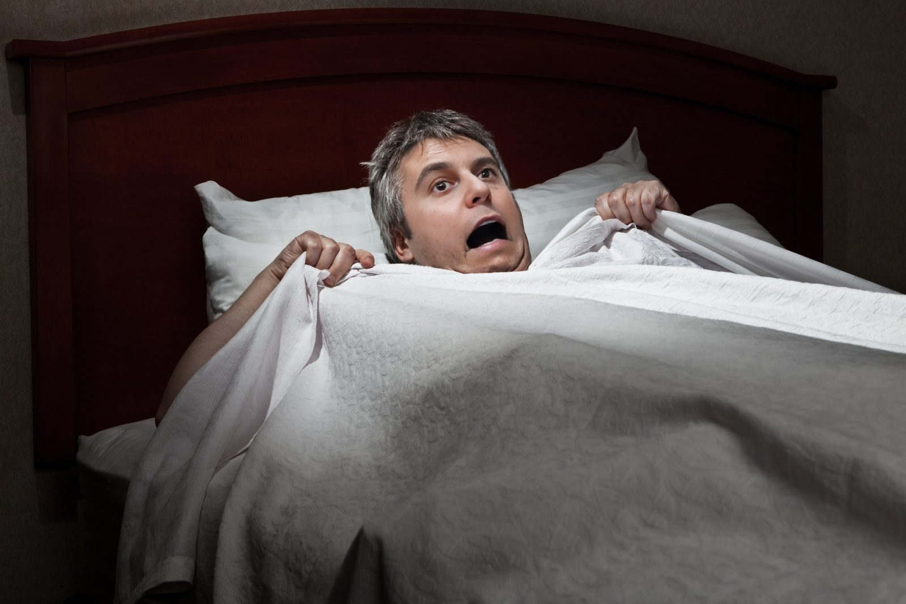

Bienvenue chez Le Canard Désenchaîné !
Préparez-vous à rire, à s'étonner et à vous émerveiller de notre journal satirique.
Nous vous invitons à explorer nos pages pour découvrir les dernières nouvelles,
les dessins animés et les critiques acerbes qui font notre quotidien.
La Une

Xavier Dupont de Ligonnès :
Un nouveau rebondissement
×
Le corps d’Alexeï Navalny est en réalité celui de Xavier Dupont de Ligonnès
Nouveau rebondissement dans le multivers improbable actuel:
le corps quasiment rendu à la famille Navalny est celui de
Xavier Dupont de Ligonnès.
Les experts dépêchés sur place en télétravail ont pu regarder
le corps en détail via webcam « Aucun doute possible, il a une
tête, 2 bras, 2 mains et 2 jambes tout comme Xavier Dupont de Ligonnès.
Bon, c’est un peu dans le désordre mais on va dire que c’est lui. »
Le corps devrait rapidement être rendu à la France même si sa femme,
Agnès, n’a toujours pas demandé son rapatriement.
Un chat équipé d'une caméra :
Agent du Hamas ?
×
« L’armée israélienne déclare avoir capturé un agent secret paléstinien :
un chat équipé de micro-caméras. »
Dans une histoire digne d’un film d’espionnage, l’armée israélienne
a récemment déclaré avoir capturé un agent secret plutôt inattendu
: un chat équipé de micro-caméras. Cette incroyable révélation a
secoué les médias du monde entier et a suscité l’émerveillement de
nombreux observateurs. Découvrons ensemble comment un simple félin
est devenu un redoutable espion au service de la cause palestinienne.
L’histoire du chat espion palestinien commence dans les rues animées
de Gaza, où ce félin astucieux a été recruté par des militants
palestiniens pour mener des opérations de surveillance en territoire
israélien. Grâce à sa discrétion naturelle et à sa capacité à se
faufiler partout, le chat a pu recueillir des informations précieuses
sans éveiller les soupçons des autorités israéliennes.

Gabriel Attal :
ergophobie aiguë ?
×
Gabriel Attal se réveille en sursaut, persuadé
qu’un chômeur se cache sous son lit
Selon nos informations, le Premier Ministre a vécu une nuit agitée comme en
témoigne une source proche de Matignon : « Le couché du prince s’était pourtant
passé comme d’habitude. Son équipe de com venait de lui lire sa page Wikipédia
pour l’endormir, Gabriel suçait son pouce et commençait même à ronfler. On est
ensuite partis sur la pointe des pieds. Tout était normal. Mais deux heures après…
on a eu la peur de notre vie… ».
Un conseiller nous raconte avec effroi ce terrible moment : « On a entendu un
énorme cri, j’ai immédiatement reconnu la voix de Gabriel. Il était debout sur
son lit, il serrait son doudou très fort contre lui… et il pointait du doigt le
dessous de son lit en criant : « un chômeur ! Un assisté ! Attention il y a une
feignasse sous mon lit ! ». La sécurité et la police ont fouillé la chambre de
fond en comble, heureusement ce n’était qu’un cauchemar. « On a tous eu si peur.
Surtout Gabriel… il a même eu un petit accident » confie son collaborateur, gêné.
Nos sources sont depuis sur le qui-vive, prêt à intervenir si une telle terreur
nocturne recommençait : « Désormais on prend les devants », raconte un de ses
gardes du corps. « On l’endort en lui lisant les pages saumon du Figaro et on
a exorcisé sa chambre avec une photo de Patrick Martin, le patron du Medef,
au-dessus de son lit”. Après enquête, nous découvrons qu’ont été installés
devant Matignon des pièges à chômeurs, des pièges à ours avec comme appât
une télécommande, des écrans plats et des paquets de chips.
Emmanuel Macron :
Futur nageur profesionnel ?
×
86% des Français « prêts à aider Macron » à réaliser son vœu
de se baigner dans la Seine
Selon un sondage IPSOS pour Le Parisien paru ce matin et relayé de nombreuses
fois sur les réseaux sociaux, 86% des Français se disent prêts à aider Emmanuel
Macron à faire son petit plongeon dans la Seine, 55% d’entre eux sont bien
décidés à le convaincre d’y aller dès ce week-end et 42% souhaitent même le
lester de poids au préalable « juste pour voir ». 61% des Français interrogés
aimeraient le voir sauter du Pont de l’Alma « pour le côté festif ». Enfin,
31% de nos concitoyens estiment qu’il serait plus judicieux de profiter de la
cérémonie d’ouverture pour l’envoyer dans la Seine à l’aide d’une catapulte.
En synergie
Parmi les activités que les Français aimeraient bien voir le président
pratiquer dans l’eau, on trouve, en tête, « la pêche aux sacs en plastique »
(28%), « l’apnée pendant plus de dix minutes » (31%) et « une bombe depuis une
grue » (36%). Interrogé sur ces résultats, le chef de l’État a déclaré :
« C’est la preuve que les Français et moi-même sommes en parfaite synergie
de pensée et d’action et que, contrairement à ce qu’on pense, ils approuvent
tous mes choix depuis près de sept ans. »